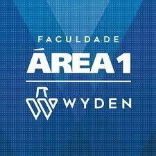
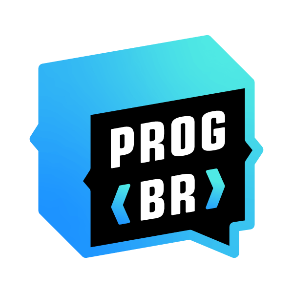
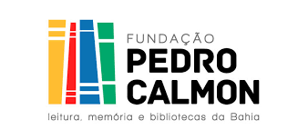
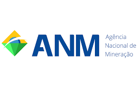

Rickson Caique Castor Varjão
Cidade: Salvador
Telefone: (71) 99999-0623
Email: ricksoncaique@gmail.com
Objetivos
Ser um Desenvolvedor Web Full Stack
Formação
FACULDADE ÁREA 1 WYDEN
Bacharel em Engenharia da Computação|Ago 2011 - Jun 2020

CENTRO UNIVERSITÁRIO SENAI CIMATEC
CCNA-Introduction to Networks|Ago 2019 - Dez 2019
CCNA- Routing and Switching Essentials| Ago 2019 - Dez 2019

Programador BR
Desenvolvedor Web Full Stack-Cursando

Experiências
Analista de Redes e Suporte
Fundação Pedro Calmon |Mai2014-presente

Estagiário de Suporte Técnico
Agencia Nacional de Mineração| Out 2012 - Abr 2013

Estagiário de Suporte Técnico
Solution Brazil |Jul2011-Out 2011
Estagiário de Suporte Técnico
Shopping da Bahia |Mai 2007 - Mai 2009
Habilidades
- Inglês - Intermediário
- Administração de (Windows Server 2012, Servidores NAS e Backup,Servidor Proxy Pfsense)
- NDG Linux Unhatched
- Conhecimentos em Linguagens: SQL,C, JAVA e HTML
- Bacula 7 - Gerenciamentod e Backup